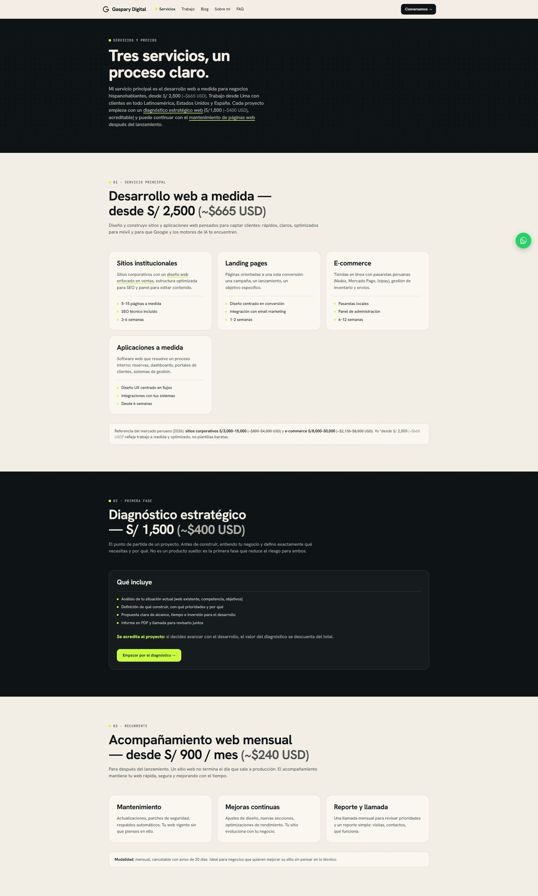
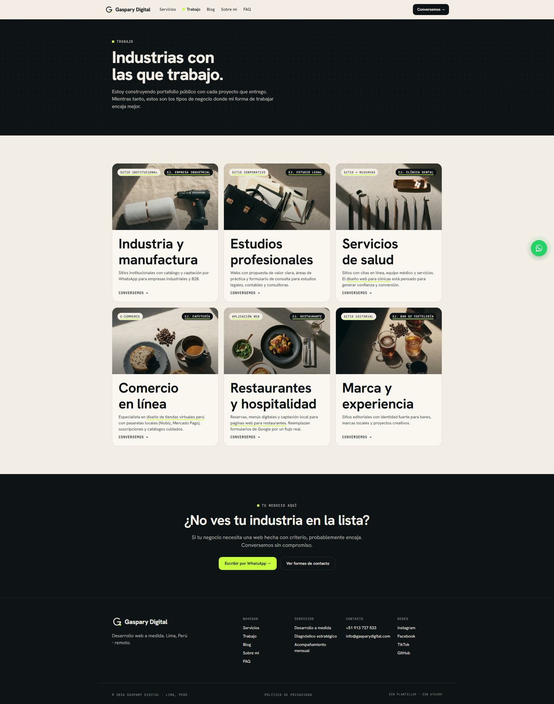
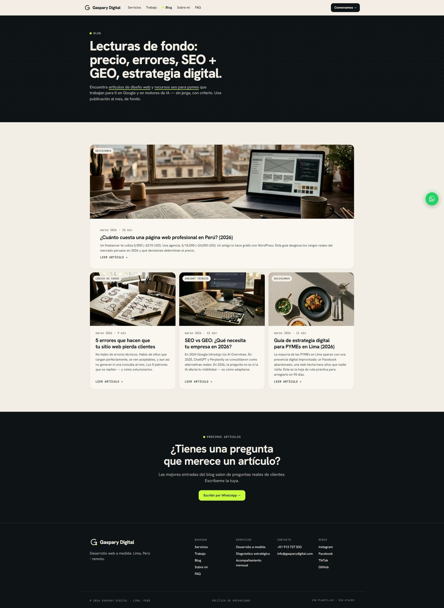
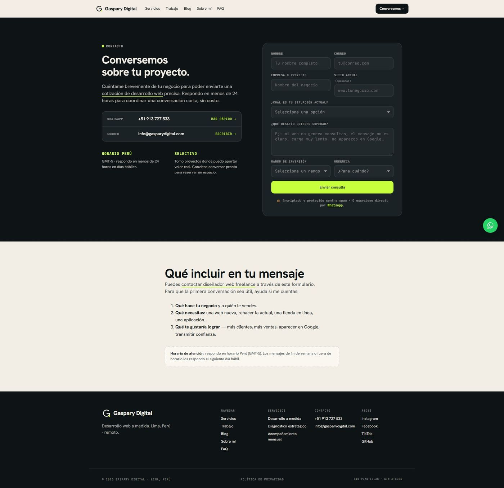

Gaspary Digital
El sitio de mi práctica freelance. Un negocio que vende desarrollo web no puede permitirse un sitio lento o invisible, así que este funcionó como banco de pruebas de todo lo que después aplico con clientes.
- Rol
- Diseño, contenido y desarrollo
- Estado
- En vivo
- Stack
- HTML, CSS y JavaScript
- Sitio
- gasparydigital.com
El problema
La mayoría de negocios pequeños en Lima llega a un desarrollador sin saber qué está comprando: no distinguen entre un sitio que existe y uno que aparece cuando alguien busca lo que venden. El sitio tenía que hacer dos cosas a la vez — atraer consultas y demostrar, siendo él mismo el ejemplo, qué diferencia hay entre ambas cosas.
Cómo lo resolví
HTML estático sin framework ni CMS. No es una postura estética: un sitio de cinco páginas no necesita una capa de build, y quitarla elimina de golpe el mantenimiento, las actualizaciones de seguridad y el tiempo de carga que arrastra un CMS. El contenido está escrito en tú peruano, con precios visibles y el proceso de trabajo explicado en cuatro pasos, porque la objeción real del cliente no es técnica sino la incertidumbre sobre cuánto va a costar y cuánto va a demorar.
La decisión que define el proyecto
Optimicé el sitio no solo para Google sino para motores generativos. Cuando alguien
le pregunta a un asistente de IA por un desarrollador en Lima, la respuesta se arma
con contenido que el modelo pueda leer y citar: datos estructurados con schema.org,
areaServed cubriendo las regiones donde ofrezco servicio, y páginas que
responden preguntas concretas en lugar de describir servicios en abstracto. Es una
apuesta sobre cómo la gente va a buscar proveedores en los próximos años.
Cómo está construido
- HTML y CSS escritos a mano, sin framework ni proceso de build
- Datos estructurados schema.org, incluyendo cobertura geográfica de servicio
- Etiquetas Open Graph, canonical y control de indexación
- Blog con artículos orientados a búsquedas reales de clientes
- Contacto directo por WhatsApp, el canal que el mercado local realmente usa
Cómo se ve



